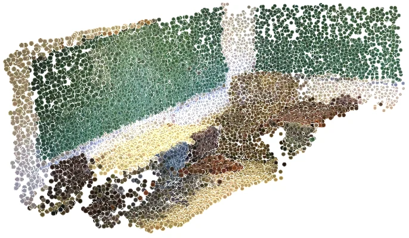

scene0086_02


CUT3R: 1.38 m · MapAnything: 1.63 m
Explore this scene ↗MULTI-VIEW SPATIAL INTELLIGENCE
QA-Native Reconstruction with Local and Global Context
for Spatial Chain-of-Thought Reasoning
1 Hong Kong University of Science and Technology2 Huawei Noah’s Ark Lab3 Harbin Institute of Technology
THE SCENES BEHIND THE PAPER
Drag to rotate. Scroll or pinch to zoom.
Choose a scene to inspect its reconstruction and paper example.

OBJECT COUNTING
A recorded example from the paper, paired with its reconstruction.
Without QA-RP and CoT-VC: 3
The red arrows show exactly which span is measured.
CUT3R: 1.38 m · MapAnything: 1.63 m
Explore this scene ↗

CUT3R: 2.82 m · MapAnything: 2.90 m
Explore this scene ↗Original measurement annotations from the paper. Switch to the 3D view to inspect the corresponding reconstruction.
TWO STAGES, ONE LANGUAGE INTERFACE
QA-RP · RECONSTRUCTION PRETRAINING
Marked-point 3D queries teach fine-grained local geometry. Object-center queries teach global scene context across views. Both use text-based question answering.
CoT-VC · SPATIAL REASONING
Spatial chain-of-thought connects estimated geometry to the requested answer. Reliability assessment and visual compensation support refinement when needed.
EXPERIMENTS
Results reported in the paper.
Higher is better.
ReVSI average
Over the strongest compared baseline
VLM backbone parameters
Displayed score range: 20–65%. Selected comparisons from Table 6. SpatialSpeak, SpatialStack, and GeoThinker are evaluated under the same 32-frame setting. VLM-3R and Cambrian-S results are sourced from the ReVSI paper.
WHY RECONSTRUCTION MATTERS
The improvement from CoT-VC grows from 2.6 to 6.9 points when the model first learns reconstruction.
ReVSI ablation, Table 1. Baseline: 52.4. CoT-VC only: 55.0. QA-RP only: 55.9. Full method: 62.8.
| Benchmark | Setting | SpatialSpeak-4B | Best compared baseline |
|---|---|---|---|
| ReVSI | 32-frame evaluation | 62.8 | 54.1 SpatialStack-4B |
| VSI-Bench | Normal training | 63.3 | 55.4 Omni-View-7B |
| VSI-Bench | Scaled training | 73.0 | 72.6 GeoThinker-8B |
| SPAR-Bench | Overall average | 76.0 | 72.0 SpatialStack-4B |
Scores and comparison settings follow Tables 6–9 of the paper. Normal and scaled training settings use different training data and should be read separately.
Vision-language models (VLMs) can benefit from geometric priors for multi-view spatial reasoning, yet answer-only training does not directly supervise the intermediate geometric estimates and their use in deriving quantitative spatial answers. We hypothesize that spatial chain-of-thought (CoT) supervision becomes more effective when the VLM first jointly learns complementary local geometry and global scene context through multi-view reconstruction.
We introduce SpatialSpeak, a two-stage framework that connects QA-native reconstruction pretraining with spatial CoT learning. In Stage I, QA-Native Reconstruction Pretraining (QA-RP) combines marked-point 3D queries for fine-grained local geometry with object-center queries for global scene context across views. Both tasks are formulated as text-based question answering, allowing geometric estimation and subsequent reasoning to share the same autoregressive output interface. In Stage II, spatial CoT with Visual Compensation (CoT-VC) trains the model to express question-relevant geometric estimates and use them to derive answers, with reliability assessment and visual compensation supporting answer refinement when needed.
On ReVSI, QA-RP increases the gain from CoT-VC from 2.6 to 6.9 points, and ablations show that both local and global reconstruction supervision are beneficial. SpatialSpeak achieves state-of-the-art results on ReVSI, VSI-Bench, and SPAR-Bench, with a ReVSI score of 62.8 that exceeds the strongest compared baseline by 8.7 points.
REFERENCE
@article{cao2026spatialspeak,
title = {SpatialSpeak: QA-Native Reconstruction with Local and Global
Context for Spatial Chain-of-Thought Reasoning},
author = {Cao, Yang and Zhang, Jiaxin and Chen, Dave Zhenyu and
Zhong, Yingji and Gao, Ruiyuan and Hong, Lanqing and Xu, Dan},
journal = {arXiv preprint arXiv:2609.33616},
year = {2026}
}arXiv:2609.33616